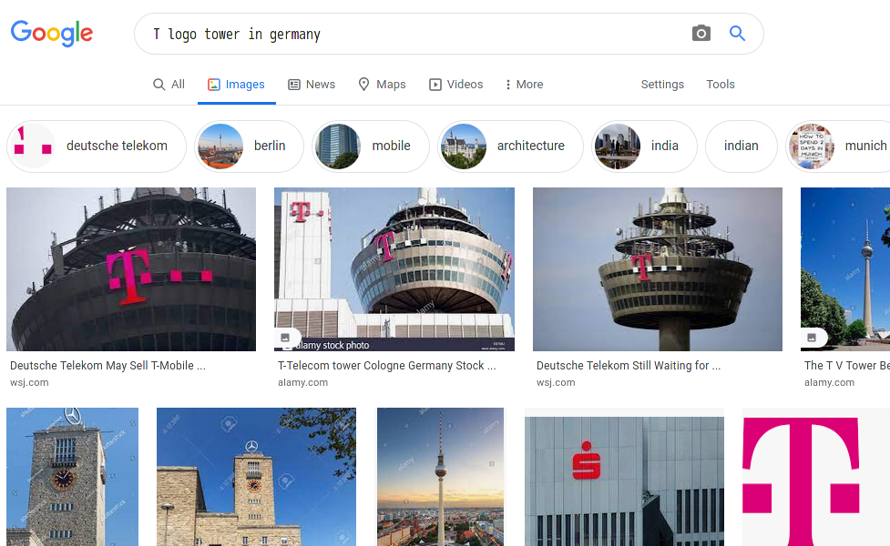
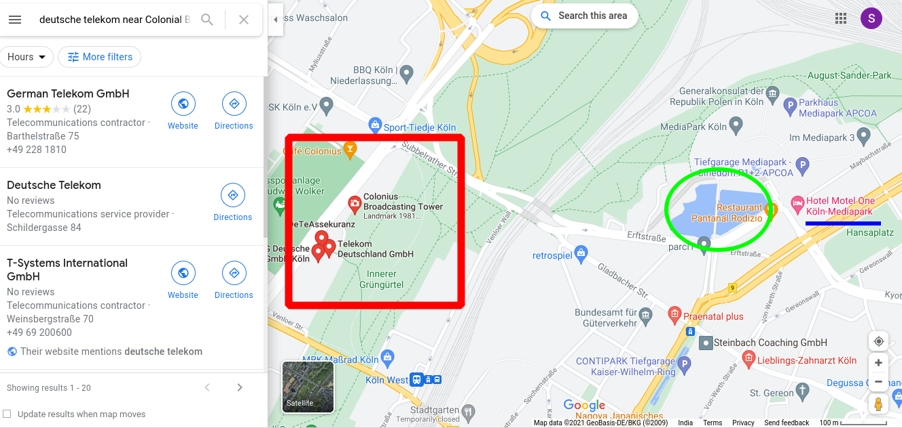
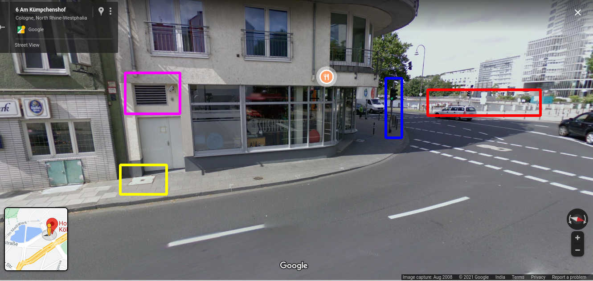

09 April 2021
🔖 Written by twitter at iamsarvagyaa
Hello to all of you ✋ I just recovered from COVID and today I was eager to learn new stuff, So I started solving quiztime challenges. Here, is a good challenge which is lil bit tough for me. Challenge was posted by Fiete Stegers. Here is challenge - look at this.

I started looking for clues in this image, got lot of clues but the problem is I'm from India not from Europe side, that's why I got lot of problems but here I'll show you how I faced and solved this challenge. Problems like, I don't know much about structure, landmarks etc of Germany. First of all I downloaded the image and started finding clues in this image. I got no strong clue and I don't know what to do. Below are clue marks.

Now, I croped the name "Motel", flipped and rotate it. Also, I imported that flipped image and glued on question image. I found the name "Motel" and that is easy to read after flipping the text. Searched on google Motel One in Germany, got lots of hotels and this will take time. So, I quit this process and start working on next clue which is a tower and the logo "t" clearly visible.
💡 Note Why I searched for Germany? - because fiete is from germany, I saw a lot of tweets of him which is in german language. That's why I searched.

I searched in Google, "t logo tower in germany" and I got wonderful result. Got the name of that tower. Here, is an article - https://www.wsj.com/articles/deutsche-telekom-may-sell-t-mobile-netherlands-unit-1445358195. The name of the tower is deutsche telekom .

Opened google map and searched this "deutsche telekom near Colonial Broadcasting Tower, Inner Kanalstraße, Cologne, Germany" and got this result. One of the best thing, I got water sources near telekum tower which is near mediapark. Now, I feel like the challenge is solved. Look at the highlighted areas.

Because, there's a hotel named "Hotel Motel One Köln-Mediapark". I jumped into street view and I started matching all clues. Air ventilation is also matching and water source is also matching, there's a traffic light is also matching. Finally, we solved this challenge :) 
I learned a lot of things. Learned, donot leave any clues.
- Co-ordinates : 50.9471436,6.9451573
- Answer : Hotel Motel One Köln-Mediapark, Cologne, Germany.